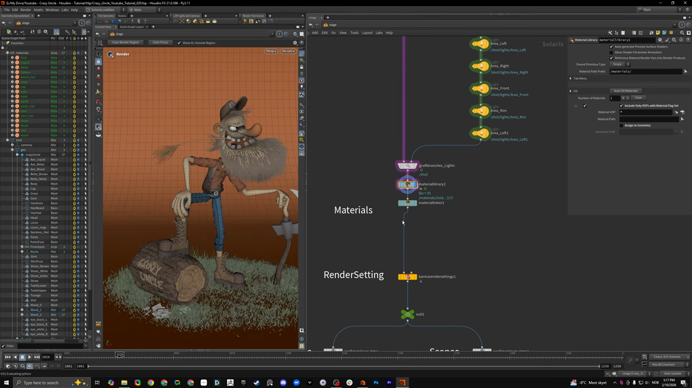
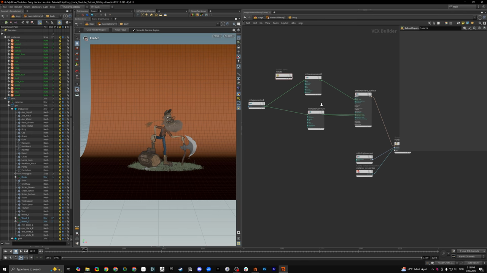
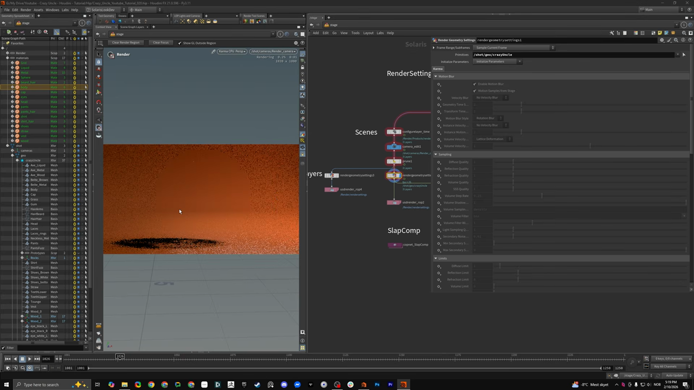

Houdini キャラクター制作 8 — Solaris と Karma でライティングしてレンダリングする
出典: Character Creation 8 | Lighting and Rendering in Karma （SideFX 公式チュートリアル Create a Procedural Character の第8回 / 講師 Roy Kristoffersen さん / Houdini 21 / 7:46 / 英語）。 このページは、上記の動画を見ながら自分用にまとめた日本語の学習メモです。SideFX 公式の翻訳ではありません。 シリーズ全体は第0回にまとめています。
この回で扱うこと
シリーズで最も短い7分46秒の回です。第7回で Solaris に渡したキャラクターに、マテリアルとライトを当ててレンダリングします。
- SOP Create で Solaris に取り込む
- MaterialX のシンプルなマテリアルを組む
Material Linkerでマテリアルを割り当てる- Karma のレンダー設定とレイヤー分け
1. Solaris に取り込む
SOP Create を作ると、SOP の中身が自動的に Solaris に入ります。
- キャラクター用の
SOP Create。import path prefix にcrazy uncleを設定しています - 地面用の
SOP Create。こちらは単純なグリッドにアトリビュートをいくつか足して bend をかけただけとのことでした - これらを
Mergeします
あとは USD 特有の設定として、プリミティブの配置先パス、カメラ、
Graft Branches によるジオメトリの取り込みが並びます。
Geometry Spreadsheet を stage 用に開くと中身が確認できます。 「Maya で普段やっているのと同じような感覚で選べる」という説明でした。 SOP Create の中で付けた名前がそのまま出てきます。
2. ライト

ライトの構成はいたってシンプルでした。/shot/lights/ の下に
エリアライトが並んでいます。
| ライト | 役割 |
|---|---|
Area_Front | 正面から |
Area_Left / Area_Left1 | 左から |
Area_Right | 右から |
Area_Rim | リムライト |
これらを Graft Branches で /shot にまとめています。
調整するパラメータも scale・translation・配置と、intensity や exposure といった基本的なものだけでした。
キャラクターが立って見えるように、必要な角度から当てているだけという説明です。
確認は Karma CPU に切り替えてビューポートで行っています。 ライトを1つずつオン・オフして効果を見せていました。
3. マテリアル

Material Library（Material Path Prefix は /materials/）の中に、
プロジェクトで使うマテリアルがすべて入っています。
body・head・eyes・shirt・pants・vest・cap・shoes・straw・wood・beard_hair など、17個ありました。
body マテリアルの中身
驚くほど単純でした。
mtlxgeomcolor1 ┬→ mtlxcolorcorrect3 ┐
└→ mtlxcolorcorrect4 ┴→ mtlxstandard_surface → MaterialMaterialX Geometry Colorでジオメトリの色を拾います。 これまでの回でCdに焼き込んできた色が、ここでそのまま使われますMaterialX Color Correctで彩度を落としたりガンマを調整したりします- それを
MaterialX Standard Surfaceの base color に入れます - もう一系統の Color Correct を subsurface color と subsurface radius に入れます
- Material Output と AOV に出します
displacement とマテリアルプロパティは今回使っていません。 「すべてのマテリアルがこの作り方」とのことでした。
ここが第2回・第3回でcurveuやアンビエントオクルージョンをCdに焼き込んでいた理由だと思います。 モデリング段階で色を作り込んでおけば、シェーダー側はそれを拾って 少し補正するだけで済みます。
Material Linker で割り当てる
マテリアルをキャラクターに割り当てるのが Material Linker です。
使い方は単純で、マテリアルを対象にドラッグして割り当てるだけでした。
動画では、サブサーフェススキャタリングが入っているマテリアルと 入っていないマテリアルを Karma CPU で比較していて、 肌の質感に明確な差が出ていました。
4. Karma のレンダー設定
Karma Render Settings の内容は、ほぼ標準のままとのことでした。
| 項目 | 設定 |
|---|---|
| 解像度 | HD（1920 × 1080） |
| カメラ | /shot/cameras/Render_camera |
| サンプリング | 1〜9。特別なことはしていません |
| Limits | diffuse limit を多めにして、バウンスを多く出しています |
| フレーム | 110〜111 |
XPU 側もほぼ標準のパラメータでした。 ここは凝らずに、モデリングとルックの作り込みで見せる方針のようです。
5. レイヤー分けと SlapComp

ネットワークには RenderSettings / Scenes / Layers / SlapComp という 付箋で区画が分けられていました。
Configure Layer → Camera Edit → Prune → Render Geometry Settings → USD Render ROP| ノード | 役割 |
|---|---|
Camera Edit | カメラを所定の位置に置きます |
Prune | レイヤーごとに不要なものを除外します |
Render Geometry Settings | Primitives に対象を指定します。上の画像では /shot/geo/crazyUncle |
これを複数系統用意することでレイヤーに分けてレンダリングできます。 動画では「地面の影だけ」「キャラクターだけ」という分け方をしていました。
最後に copnet_SlapComp という COP ネットワークがあり、
ここでガンマなどの画像調整をかけられるようになっています。
この回のまとめ
SOP Createを置くだけで SOP の中身が Solaris に入ります- ライトはエリアライトを正面・左右・リムに置いた素直な構成です
- マテリアルは
MaterialX Geometry ColorでCdを拾い、Color Correctを通してStandard Surfaceに入れるだけの単純な作りです - モデリング段階で色を
Cdに作り込んであるので、シェーダー側が単純で済みます - 割り当ては
Material Linker。サブサーフェスの有無で肌の見え方が変わります - Karma の設定はほぼ標準。diffuse limit だけ多めにしています
Camera Edit→Prune→Render Geometry Settingsの組でレイヤー分けレンダリングができます
次はいよいよ最終回、第9回 Unreal Integration です。